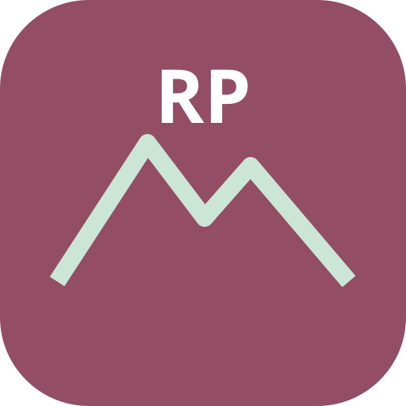

Ideas que os apetezca compartir. Cada persona puede decir que no.
Añadir una propuesta
Ideas compartidas
Se ordenan por la menor de las dos valoraciones. La puntuación nunca crea una obligación.

MARCO PESCADOR · 2.0.0
Ideas que os apetezca compartir. Cada persona puede decir que no.
Se ordenan por la menor de las dos valoraciones. La puntuación nunca crea una obligación.